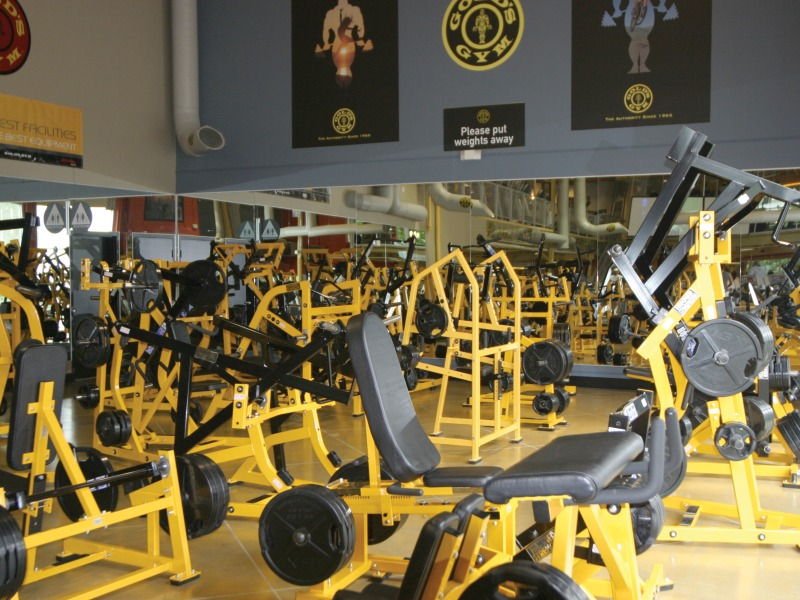
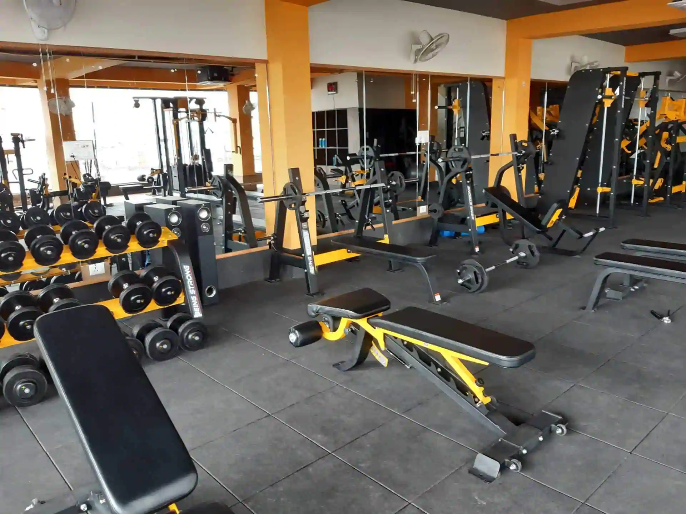
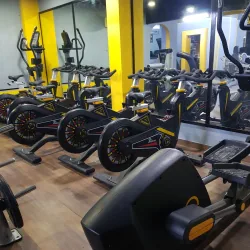
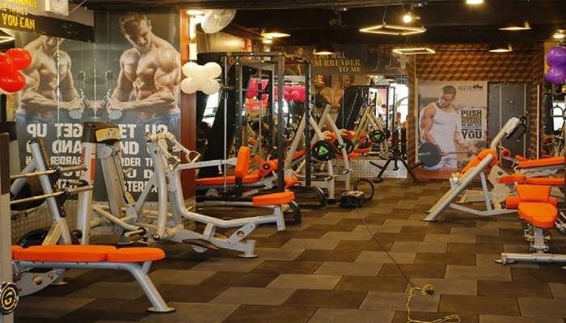
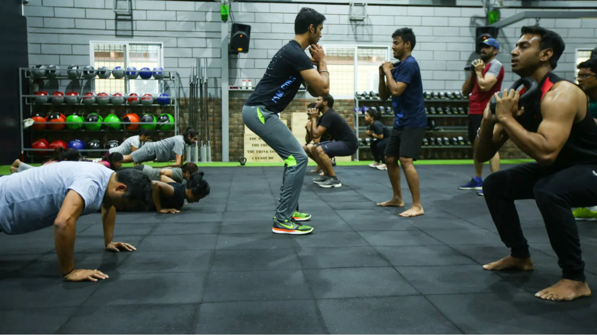

Best gyms in Indirapuram
It's difficult to navigate the world of gyms and fitness centres anywhere, but it's even more challenging in Indirapuram, where it seems like a new gym opens every other week. If you're constantly looking for "gyms near me," don't worry; the team at BestinIndirapuram has opted to do all the grunt (pun intended) work for you. We've compiled a list of the top 5 gyms in Indirapuram for your convenience. For the purposes of this list, we spoke with the founders, read all of the feedback, and spoke with their existing customers. There was some fierce rivalry, but here are the best gyms in Indirapuram, in no specific order:
Gold's gym

The first gym that we are recommending to you is Gold's gym. Loaded
with the latest equipment, the gym is located near Gaur Gravity. The
trainers are experienced and passionate about what they do. Their
mission is to change the world one body at a time. No doubt they are
definitely part of the conversation when one is talking about the best
gym in Indirapuram. There are inhouse trainers for both men and women,
who will provide you with a personalised diet plan and exercise
schedule to keep you motivated. At the trial class that the
BestinIndirapuram team took, everything seemed working and legit. To
know more, contact them or visit them here:
Address: 4-5, LGF, Gaur Gravity, 8, Kala Pathar Rd, Vaibhav Khand,
Indirapuram, Ghaziabad, Uttar Pradesh 201014
Phone: 095600 97166
Loha gym

If you ask anyone around town for a recommendation regarding gyms in
Indirapuram, the name of the reputed Loha gym will definitely pop up
sooner or later. They are one of the largest gyms of the city, and
have multiple inhouse trainers that are ever-ready to serve answers to
your queries. The support staff was really polite and gracious to our
team, and the infrastructure was also one of the best across
Indirapuram. The owner also knows a lot about the fitness and
healthcare lifestyle, and will assign you a personal trainer for your
custom needs. The gym has new and regularly maintained machines, with
clear instructions about how to use them. For more information about
this gym, please contact Loha gym at:
Address: 9, Kala Pathar Rd, Makanpur, Nyay Khand III,
Indirapuram, Ghaziabad, Uttar Pradesh 201010
Fitness Goal gym

Located at Retailex mall, Fitness goal gym is the one-stop gym for
you, whether you are a calisthenics guy, a powerlifter, a newbie, or
an experienced weightlifter. The gym provides you with the latest
machinery so that you can train your body in unique and safe ways. The
trainers are certified, and can help you formulate the perfect
workout. The presences of trainers also helps you in not developing
any bad habits, as they guide you to the perfect form for each
exercise. The overall vibe of the gym is quite vibrant. So, if you
want to take your body from zero to hero, enrol now at Fitness goal
gym and see your body transform! The contact information and address
is as follows:
Address: Retailex mall 2nd floor, Abhay Khand 3, Indirapuram,
Ghaziabad, Uttar Pradesh 201014
Phone: 070119 46060
Fitness headquarter gym

If you're looking for a gym, Fitness headquarter is one of the best
choices in town. Or perhaps even more so, if you're involved in
undergoing a transformation. So, go ahead and book a trial class at
the gym, and believe us when we say you will not be disappointed. The
current crop of their customers only had good things to say about
them. None of them had even a single complaint. The staff is gracious
and kind, and enables people to become their best self. The training
staff is highly qualified, and make sure that the attitude of the
people remains right and motivated. This gym definitely has our seal
of approval! Here are their contact details:
Address: fitness headquarter gym and spa, Nipun Wonder Mall, Shakti
Khand 2, Indirapuram, Ghaziabad, Uttar Pradesh 201014
Phone:
087000 02701
Cult fit gym

Last, but definitely not the least if you ask us, is Cult.fit. Another
solid option when it comes to the world of gyms, this Indirapuram
stalwart transforms the lives of people of all body shapes and
compositions, and does an amazing job in doing so, if the experience
of the current crop of ‘gymmers’(is that even a word?) is anything to
go by. The can-do attitude and hardworking nature of the trainers and
the support staff is surely the icing on the cake. Not only a physical
transformation guaranteed, the trainers will also change your mindset
about fitness and health leading to a mental transformation. Also,
it's promoted by Hrithik Roshan, if you care. For more information
about membership fees and other programs, contact them at:
Address: 1st Floor, Aditya Mall, Aditya Mega City, Vaibhav Khand,
Indirapuram, Ghaziabad, Uttar Pradesh 201014
So, that was it! Now you know what are the best gyms in Indirapuram. Liked it? Great! Check our other articles here. And if you think someone needs this information, don’t hesitate to share this page on WhatsApp, Facebook or even through word-of-mouth.